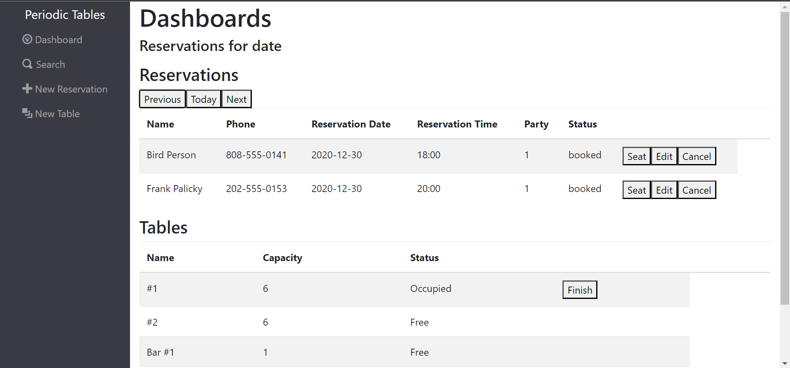
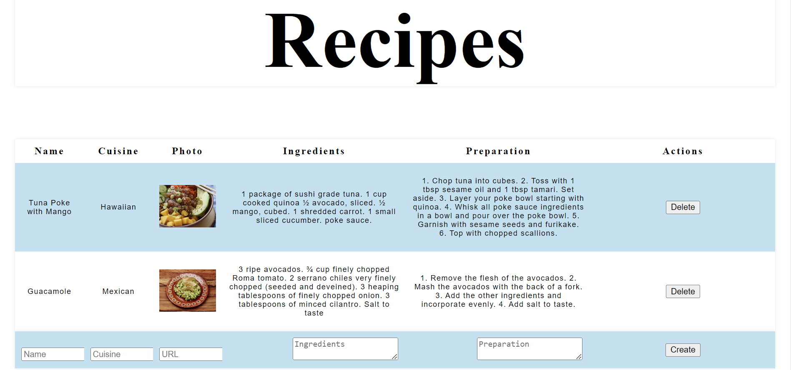
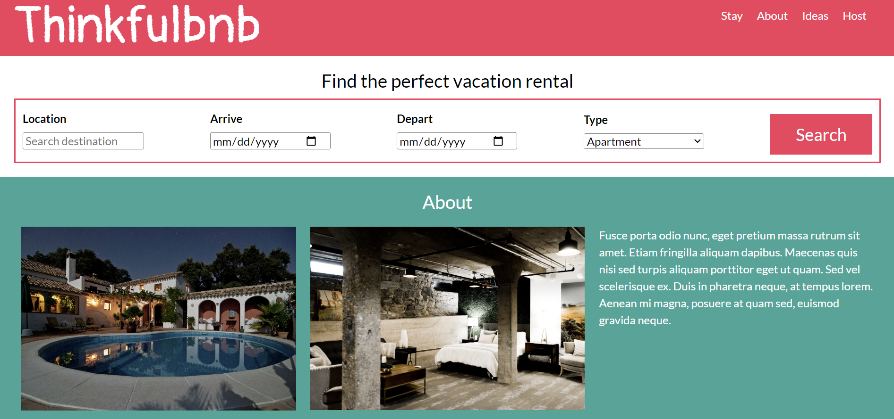

I am a software developer living in Atlanta, Georgia.
Take a look at my website to get to know a little bit more about me, and feel free to contact me.
About Jessyca
After attending college, I became an automotive technician. Within three years of entering the field, I earned the title of Master Technician. My favorite part of my job is diagnosing, due to it challenging my problem solving skills. In my spare time I took up coding, and found that it brought me a similar joy, and I've been in love with it ever since.
I am a recent Thinkful graduate, and I am so excited to continue my journey as a software developer!
If you're looking to higher a passionate hardworking developer with an unquenchable thirst to learn, contact me! I am so excited to start this new journey and build great things with a great team.
In my free time I like:
- Pretending to be a painter
- Reading books about far away pretend lands
- Picking heavy things up and putting them down (Gym)
Projects
I have created so many projects that I am so proud of. I wish I could show them all here! But here are just a few of my pride and joys that I have completed recently.
This application is for restaurant personnel. It allows thems to create, edit, list, search, track, and seat reservations. The system allows manages tables's availabilties and capacities. Some of the technologies I used were React.js, CSS, Node.js, Express, PostgreSQL, Node.js, Express, and APIs. Feel free to check out my site, and add a reservation of your own!

This application allows users to create and save new recipies. It's a great way to keep track of all those family recipes collecting dust in your drawer! As someone who loves to cook and collect recipecs, I love using this application to keep my recipes organized, and all in one place. Some of the technologies I used were React, HTML5, CSS, and Bootstrap.

This application is a lookalike of AirBnb static website with responsive views for mobile, tablets, and desktop. Some of the technologies I used were HTML, CSS, and Flexbox.

If you're interested in seeing any more of my work, feel free to check out my github